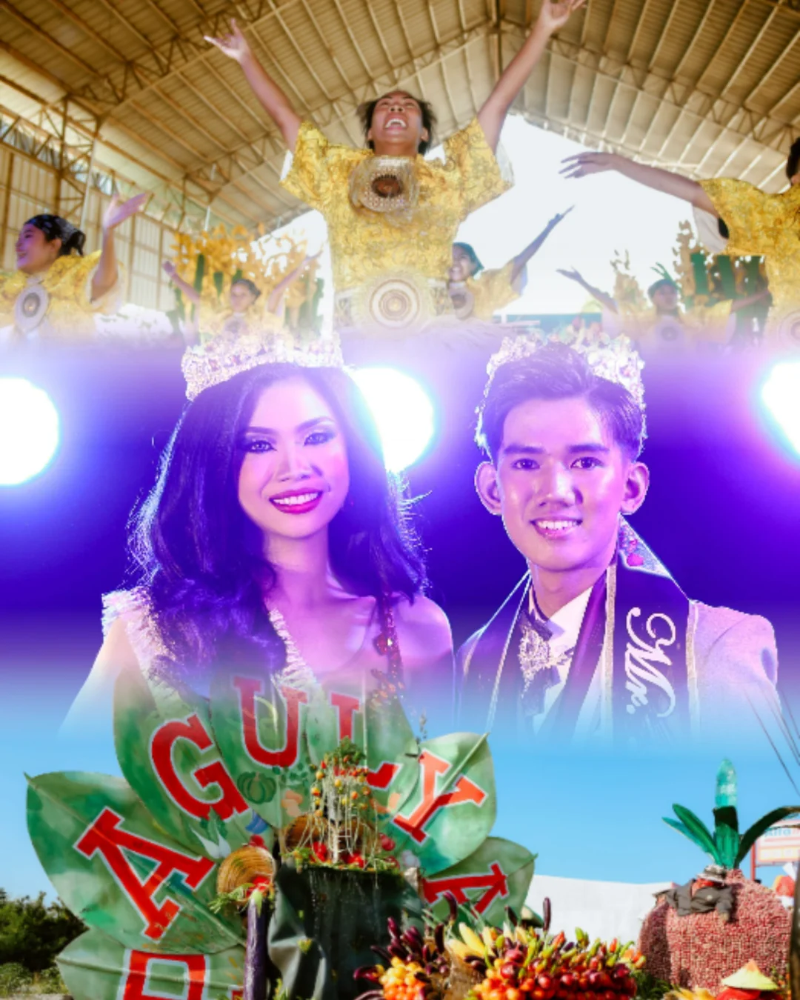

History, culture, and natural beauty in one municipality.

Laur is a first-class municipality in the province of Nueva Ecija, Philippines. It is situated at the eastern part of the province, bordering the Sierra Madre mountain range.
Known for its agricultural heritage and rich natural landscapes, Laur is home to warm and welcoming communities that take pride in their local culture and traditions.

Ang Pagulyas Festival ay isa sa mga pangunahing kaganapan sa turismo ng Laur na dinarayo ng mga lokal at bisita mula sa iba't ibang lugar. Ang pangalang Pagulyas ay nagmula sa pinagsamang salita na Pa (palay), Gul (gulay), at Yas (sibuyas), na sumasagisag sa pangunahing ani ng bayan. Tampok dito ang makukulay na parada, masasarap na pagkain, at ang mainit na pagtanggap ng mga taga-Laur. Nakatutulong ito sa pagpapalago ng turismo at pagpapakilala ng mayamang kulturang agrikultural ng lugar.
Isa sa pinakaaabangan ang street dance competition, kung saan ang mga kalahok mula sa paaralan at barangay ay nagsusuot ng makukulay na kasuotan at nagpapakita ng masiglang sayaw sa kalsada.
From mountain views to river parks, Laur offers stunning natural scenery waiting to be explored.
Historic landmarks, centuries-old traditions, and a community proud of its Filipino roots.
Experience farm life, local produce, and the agricultural soul of Nueva Ecija up close.
The people of Laur are known for their genuine hospitality and warm reception of visitors.
Located near the Sierra Madre, Laur is home to diverse flora and fauna unique to the region.
Away from city noise — Laur offers a peaceful retreat perfect for relaxation and reflection.
Our tourism office is ready to help you make the most of your trip.